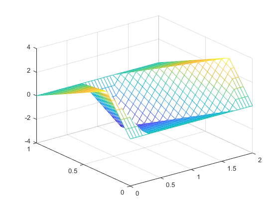

matlab工程分析第二次作业
% 2.3
%a
y = [0,-0.2,0.4,-0.6,0.8,-1.0,-1.2,-1.4,1.6];
z = sin(y);
nz = z(find(z<0));
min_nz = min(nz)
max_nz = max(nz)
% b
pz = z(find(z>0));
squar_pz = z.^2min_nz =
-0.9854
max_nz =
-0.1987
squar_pz =
0 0.0395 0.1516 0.3188 0.5146 0.7081 0.8687 0.9711 0.9991% 2.7
%a
x = magic(3)
temp = x(1,1:3);
x(1,1:3) = x(2,1:3);
x(2,1:3) = temp;
temp = x(2,1:3);
x(2,1:3) = x(3,1:3);
x(3,1:3) = temp;
xx =
8 1 6
3 5 7
4 9 2
x =
3 5 7
4 9 2
8 1 6%b
x = magic(3)
temp = x(1:3,1);
x(1:3,1) = x(1:3,2);
x(1:3,2) = temp;
temp = x(1:3,1);
x(1:3,1) = x(1:3,3);
x(1:3,3) = temp;
xx =
8 1 6
3 5 7
4 9 2
x =
6 8 1
7 3 5
2 4 9% 2.11
x = 1:0.5:5;
a = sqrt(2.8);
N = 1:1:100;
Sinf = (a./sqrt(a^2+x.^2)).*(sin(pi.*(sqrt(a^2+x.^2)))./sin(pi*a))
[nn,xx] = meshgrid(N,x);
Sn = prod((1-xx.^2./(nn.^2-a^2))')
eN = 100*(Sn-Sinf)./SinfSinf =
0.1590 -0.6101 -0.7077 0.0170 0.5577 0.1865 -0.3925 -0.2384 0.2803
Sn =
0.1606 -0.6240 -0.7364 0.0181 0.6099 0.2106 -0.4603 -0.2917 0.3595
eN =
1.0001 2.2643 4.0610 6.4176 9.3707 12.9670 17.2642 22.3330 28.2588% 2.15
K = 0:1:25;
n = 2;
x = 1:1:6;
Bessel = besselj(2,x) % MaTLAB's built-in fucntion
[kk,xx] = meshgrid(K,x);
Bessel_k25 = sum(((-1).^kk.*(xx./2).^(2*kk+2)./(gamma(kk+3))./factorial(kk))') % series representaztion with K=25 Bessel =
0.1149 0.3528 0.4861 0.3641 0.0466 -0.2429
Bessel_k25 =
0.1149 0.3528 0.4861 0.3641 0.0466 -0.2429% 2.19
n = 1:1:300;
kk = meshgrid(n,n);
ii = tril(ones(300),0);
length = 0.5*sum((1./kk.*ii)');
len_1 = find(length>1);
len_2 = find(length>2);
len_3 = find(length>3);
len_1(1,1)
len_2(1,1)
len_3(1,1)ans =
4
ans =
31
ans =
227% 2.23
z = 10;
Sinf = pi/(2*z)*coth(pi*z)-1/(2*z^2)
n = 1000;
N = 1:1:n;
nn = meshgrid(N,N);
ii = tril(ones(n),0);
Sn = sum((1./(nn.^2+z^2).*ii)');
find(abs(Sinf-Sn)<3e-3)Sinf =
0.1521
ans =
Columns 1 through 13
333 334 335 336 337 338 339 340 341 342 343 344 345
Columns 14 through 26
346 347 348 349 350 351 352 353 354 355 356 357 358
Columns 27 through 39
359 360 361 362 363 364 365 366 367 368 369 370 371
Columns 40 through 52
372 373 374 375 376 377 378 379 380 381 382 383 384
Columns 53 through 65
385 386 387 388 389 390 391 392 393 394 395 396 397
Columns 66 through 78
398 399 400 401 402 403 404 405 406 407 408 409 410
Columns 79 through 91
411 412 413 414 415 416 417 418 419 420 421 422 423
Columns 92 through 104
424 425 426 427 428 429 430 431 432 433 434 435 436
Columns 105 through 117
437 438 439 440 441 442 443 444 445 446 447 448 449
Columns 118 through 130
450 451 452 453 454 455 456 457 458 459 460 461 462
Columns 131 through 143
463 464 465 466 467 468 469 470 471 472 473 474 475
Columns 144 through 156
476 477 478 479 480 481 482 483 484 485 486 487 488
Columns 157 through 169
489 490 491 492 493 494 495 496 497 498 499 500 501
Columns 170 through 182
502 503 504 505 506 507 508 509 510 511 512 513 514
Columns 183 through 195
515 516 517 518 519 520 521 522 523 524 525 526 527
Columns 196 through 208
528 529 530 531 532 533 534 535 536 537 538 539 540
Columns 209 through 221
541 542 543 544 545 546 547 548 549 550 551 552 553
Columns 222 through 234
554 555 556 557 558 559 560 561 562 563 564 565 566
Columns 235 through 247
567 568 569 570 571 572 573 574 575 576 577 578 579
Columns 248 through 260
580 581 582 583 584 585 586 587 588 589 590 591 592
Columns 261 through 273
593 594 595 596 597 598 599 600 601 602 603 604 605
Columns 274 through 286
606 607 608 609 610 611 612 613 614 615 616 617 618
Columns 287 through 299
619 620 621 622 623 624 625 626 627 628 629 630 631
Columns 300 through 312
632 633 634 635 636 637 638 639 640 641 642 643 644
Columns 313 through 325
645 646 647 648 649 650 651 652 653 654 655 656 657
Columns 326 through 338
658 659 660 661 662 663 664 665 666 667 668 669 670
Columns 339 through 351
671 672 673 674 675 676 677 678 679 680 681 682 683
Columns 352 through 364
684 685 686 687 688 689 690 691 692 693 694 695 696
Columns 365 through 377
697 698 699 700 701 702 703 704 705 706 707 708 709
Columns 378 through 390
710 711 712 713 714 715 716 717 718 719 720 721 722
Columns 391 through 403
723 724 725 726 727 728 729 730 731 732 733 734 735
Columns 404 through 416
736 737 738 739 740 741 742 743 744 745 746 747 748
Columns 417 through 429
749 750 751 752 753 754 755 756 757 758 759 760 761
Columns 430 through 442
762 763 764 765 766 767 768 769 770 771 772 773 774
Columns 443 through 455
775 776 777 778 779 780 781 782 783 784 785 786 787
Columns 456 through 468
788 789 790 791 792 793 794 795 796 797 798 799 800
Columns 469 through 481
801 802 803 804 805 806 807 808 809 810 811 812 813
Columns 482 through 494
814 815 816 817 818 819 820 821 822 823 824 825 826
Columns 495 through 507
827 828 829 830 831 832 833 834 835 836 837 838 839
Columns 508 through 520
840 841 842 843 844 845 846 847 848 849 850 851 852
Columns 521 through 533
853 854 855 856 857 858 859 860 861 862 863 864 865
Columns 534 through 546
866 867 868 869 870 871 872 873 874 875 876 877 878
Columns 547 through 559
879 880 881 882 883 884 885 886 887 888 889 890 891
Columns 560 through 572
892 893 894 895 896 897 898 899 900 901 902 903 904
Columns 573 through 585
905 906 907 908 909 910 911 912 913 914 915 916 917
Columns 586 through 598
918 919 920 921 922 923 924 925 926 927 928 929 930
Columns 599 through 611
931 932 933 934 935 936 937 938 939 940 941 942 943
Columns 612 through 624
944 945 946 947 948 949 950 951 952 953 954 955 956
Columns 625 through 637
957 958 959 960 961 962 963 964 965 966 967 968 969
Columns 638 through 650
970 971 972 973 974 975 976 977 978 979 980 981 982
Columns 651 through 663
983 984 985 986 987 988 989 990 991 992 993 994 995
Columns 664 through 668
996 997 998 999 1000% 2.27
A = [1 -1;2 -1];
B = [1 1;4 -1];
(A+B)^2
A^2+B^2ans =
4 0
0 4
ans =
4 0
0 4% 2.31
X = [17 31 5;6 5 4;19 28 9;12 11 10];
H = X*inv(X'*X)*X';
diag(H)ans =
0.7294
0.9041
0.4477
0.9188% 2.35
N = 1:1:50;
a = 0.25;
eta = 0:0.05:1;
eta1 = 0:0.05:a;
eta2 = a:0.05:1;
tao = 0:0.05:2;
[E1, temp1] = meshgrid(eta, sin(N*pi*a)./N.^2);
temp2 = sin(N'*pi*eta);
Rnx = temp1.*temp2;
temp3 = cos(N'*pi*tao);
u = 2/(a*pi*(1-a))*Rnx'*temp3;
size(u)
size(eta)
size(tao)
mesh(tao,eta,u)ans =
21 41
ans =
1 21
ans =
1 41
% 2.39
A = [16 32 33 13;5 11 10 8;9 7 6 12;34 14 15 1];
b = [91;16;5;43];
values = A\b;
s = values(1)
u = values(2)
p = values(3)
w = values(4)
det(A) % determinant
% the inverse of s,u,p,w
1/s
1/u
1/p
1/ws =
-0.1258
u =
-8.7133
p =
11.2875
w =
-0.0500
ans =
7.6800e+03
ans =
-7.9503
ans =
-0.1148
ans =
0.0886
ans =
-20.0000